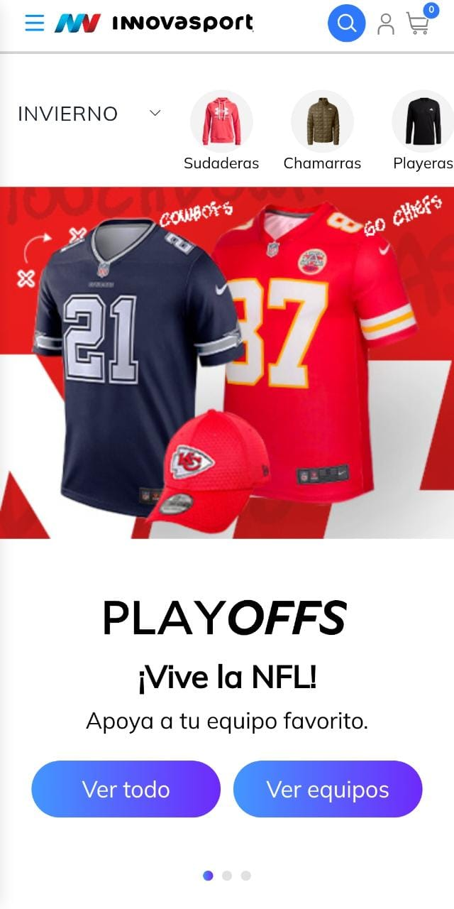

Visual Hierarchy
Innova Sports
www.innovasport.com Visual Hierarchy talks about placing a single thing as a priority without showing too much information about the entire theme of the page, but rather emphasizing attention to a single product/information with which the user can interact and use as a reference to access other sites from the web. Innova sports used seasonal products such as the NFL to show an interesting option that will probably lead many users to click on the search and navigation buttons.
Hick's Law
Spotify
www.spotify.comHick's Law tells us that the options for the user to make a decision must be limited and must focus on the necessary ones, since if too many things are offered in a single image, the user will not know what to choose, what they are looking for is a Quick decision making, in this case Spotify used its space very well so that its subscription packages are shown one by one, with a total of only 5,the options are being discarded since there are packages that only apply to students or a more familiar number.
Fitt's Law
Airbnb
www.airbnb.mxFitt's law tells us that the distance between the user's fingers and the buttons needed to complete an action should be short, so that a very long movement is not necessary to access the main functions, in this case airbnb accommodated everything very focused and strategically so that the movements are very short and by sections, below it has together the options of favorites, login and find, while above the search engine with the filters and the type of adventure desired.